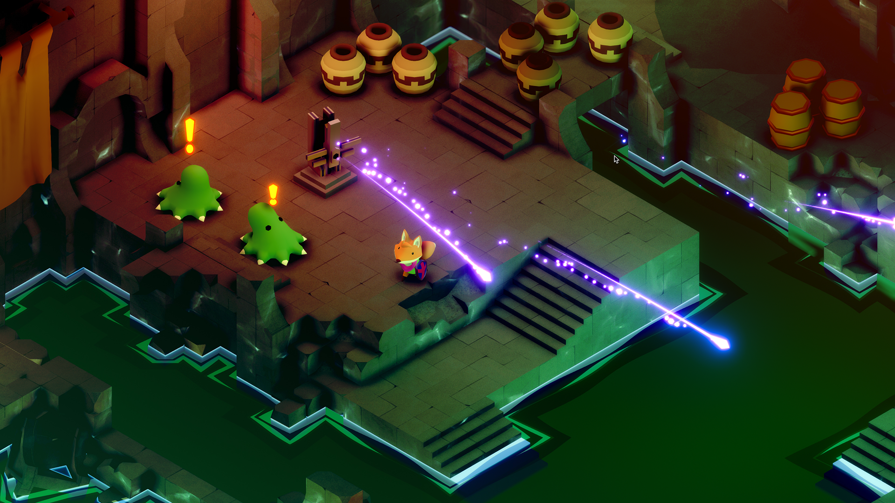
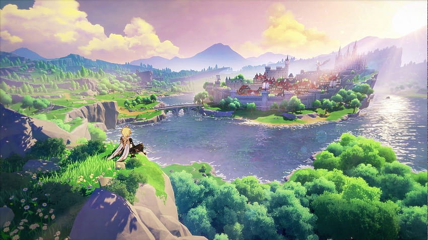

- 
- 

Aquí encontrarás una selección de los títulos que han dejado una huella imborrable en mi corazón gamer. Desde épicas aventuras y emocionantes desafíos, hasta historias que nos han hecho reír, llorar y reflexionar, cada uno de estos juegos ha sido una experiencia única. Acompáñame en este viaje a través de mis videojuegos más queridos y descubre por qué son tan especiales para mí. ¡Prepárate para revivir momentos inolvidables y tal vez encontrar tu próximo gran juego!

El género de videojuegos de aventuras se centra en la exploración, la narrativa y la resolución de acertijos.
Has click en la imagen :
Este género abarca una amplia variedad de estilos y enfoques, y se caracteriza por su capacidad para sumergir a los jugadores en mundos ficticios ricos en detalles y conflictos.
Has click en la imagen :
El género 2D en los videojuegos se refiere a aquellos que utilizan gráficos bidimensionales, donde la acción se desarrolla en un plano.
Has click en la imagen :